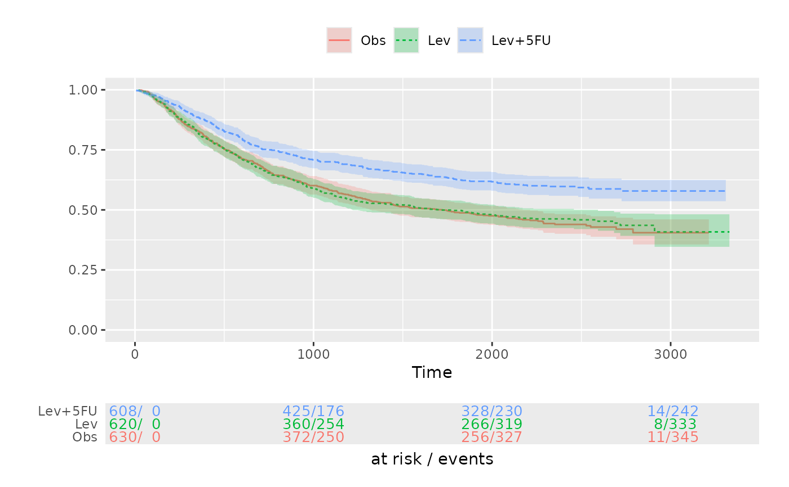
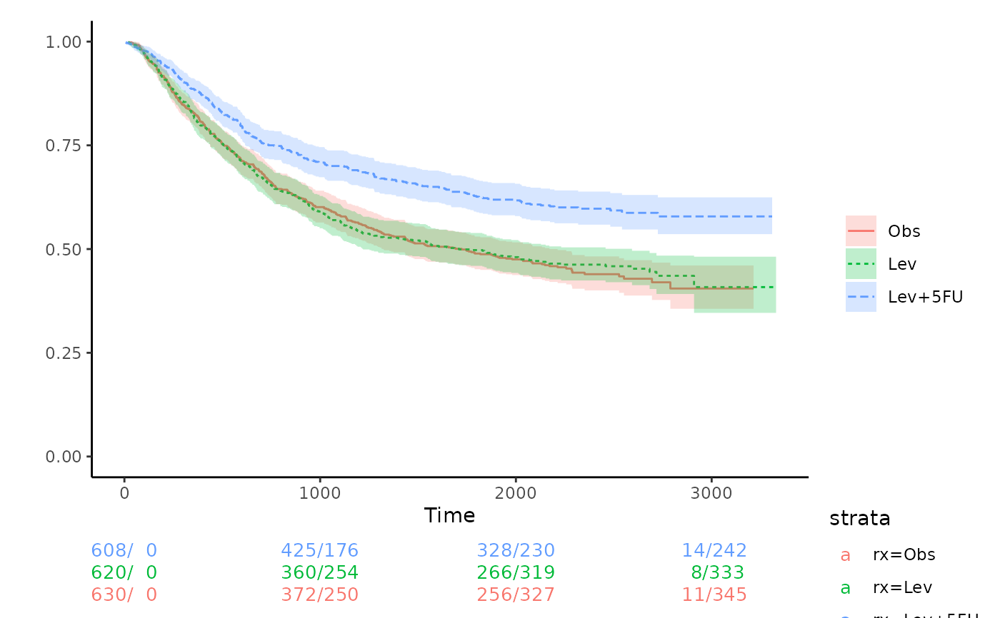

Create a Kaplan-Meier plot using ggplot2
Usage
km_ggplot(
sfit,
xlabs = "Time",
ylabs = "",
strata_labs = NULL,
ystratalabs = deprecated(),
timeby = NULL,
pval = FALSE,
p_digits = getOption("cctu_p_digits", default = 4),
...
)Arguments
- sfit
a
survfitobject- xlabs
x-axis label
- ylabs
y-axis label
- strata_labs
The strata labels. If left as NULL it defaults to
levels(summary(sfit)$strata)with minor prettification.- ystratalabs
deprecated and only for back compatibility. use strata_labs argument.
- timeby
numeric: Default is NULL to use ggplot defaults, but allows user to specify the gaps between x-axis ticks
- pval
logical: add the p-value to the plot?
- p_digits
integer: the number of decimal places to use for a p-value.
- ...
option parameters include `xlims` and `ylims` to set the axes' ranges, where defaults are derived from the data: both are vectors of length two giving the min and max.
Value
a list of ggplot objects is made: the top figure and a table of
counts.
The object has a print and plot method that uses
wrap_plots to glue together. The user can access
and modify the ggplot components as desired.
Details
This function will return a list of `ggplot2` object. The KM-plot will stored at `top` and risktable will stored at `bottom`. You can modifies those as you normally draw a plot with `ggplot2`. You can modify anything you want except the x-axis scale of the plot, otherwise the x-axis of KM-plot and the risk table will not align. There are other packages, like `ggsurvfit`, you can use to draw a KM-plot with more options.
Author
Original taken from
http://statbandit.wordpress.com/2011/03/08/an-enhanced-kaplan-meier-plot/
but modified by authors of cctu package.
Examples
library(survival)
fit <- survfit(Surv(time, status) ~ rx, data = colon)
km_ggplot(fit)

## Change theme of the KM-plot
p <- km_ggplot(fit)
p$top <- p$top +
ggplot2::theme_classic()
# Change the theme of the risktable
p$bottom <- p$bottom +
ggplot2::theme_void()
plot(p)
